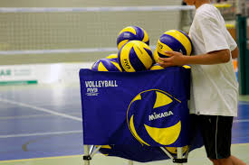

Para o que servem:
Exercícios para vôlei são atividades específicas que ajudam a desenvolver as habilidades
necessárias para jogar vôlei de maneira eficiente. Esses exercícios são projetados para melhorar aspectos
como técnica, coordenação, força, velocidade, agilidade e condicionamento físico dos jogadores.

Fonte:
https://es.ongvivendoesporte.com.br/fale-conosco
Exercícios de Passe:
Passe de peito: Jogadores se posicionam em duas fileiras, passando a bola um para o outro usando a técnica de passe de peito.
Passe de antebraço: Similar ao passe de peito, mas usando a técnica de antebraço.
Exercícios de Levantamento:
Levantamento de bola: Jogadores praticam a técnica de levantamento, enviando a bola para um colega de equipe.
de largura.
Exercícios de Ataque:
Ataque frontal: Jogadores treinam a técnica de ataque, saltando e batendo na bola para marcar pontos.
Ataque de fundo: Treinamento de saque forte e preciso.
Exercícios de Bloqueio:
Bloqueio estático: Jogadores praticam a técnica de bloqueio sem movimento.
Bloqueio dinâmico: Bloqueio realizado com movimento lateral e salto.
Exercícios de Defesa:
Defesa de bolas altas: Jogadores treinam a técnica de defesa de bolas que são atacadas em altura.
Defesa de bolas baixas: Treinamento para defesa de bolas que quicam mais próximo ao solo.
Exercícios de Saque:
Saque flutuante: Prática do saque sem efeito, visando uma trajetória imprevisível.
Saque com efeito: Treinamento do saque com topspin ou float serve.
Exercícios de Condicionamento Físico:
Corrida em volta da quadra: Melhorar resistência e velocidade.
Treino de agilidade: Usando cones ou obstáculos para melhorar a mudança de direção e agilidade.
Exercícios de Coordenação e Agilidade:
Saltos verticais: Treinamento para melhorar o salto vertical, importante para bloqueios e ataques.
Movimentos rápidos e explosivos: Exercícios que envolvem corridas curtas e mudanças de direção rápidas.
Volte ao início da página